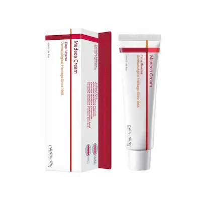

Centellian24 Madeca Cream Time Reverse 50 ml: review al cremei de față
Review editorial independent. Produs oferit de
BeautyPanda
Acest material a fost realizat în scop informativ și editorial.
Faptul că produsul a fost oferit pentru review nu înseamnă că
articolul a fost aprobat sau că textul său a fost convenit cu
brandul ori cu vânzătorul.
Informațiile prezentate se bazează pe analiza ingredientelor,
caracteristicile declarate ale produsului și datele disponibile
despre componentele formulei. Acestea nu reprezintă o recomandare
oficială din partea producătorului și nu înlocuiesc consultarea
unui specialist.
Toate denumirile de branduri, mărcile comerciale și denumirile
produselor aparțin deținătorilor legali și sunt utilizate exclusiv
în scop informativ și editorial.
Produs oferit de BeautyPanda pentru un review editorial independent.
Analizăm Centellian24 Madeca Cream Time Reverse 50 ml: caracteristicile cremei, ingredientele, textura și modul în care poate fi inclusă în rutina zilnică de îngrijire a pielii. Vom examina principalele componente ale formulei, particularitățile de utilizare și tipurile de piele pentru care produsul ar putea fi potrivit.

Centellian24 Madeca Cream Time Reverse 50 ml — cremă de față
Cremă pentru îngrijirea zilnică a pielii. Analizăm formula Centellian24 Madeca Cream Time Reverse, ingredientele-cheie, textura și rolul acestora în menținerea hidratării și a confortului pielii. Discutăm, de asemenea, cui i s-ar putea potrivi produsul, cum poate fi integrat în rutina de îngrijire și la ce trebuie să fie atente persoanele cu piele sensibilă.
De ce merită atenția această cremă?
Centellian24 Madeca Cream Time Reverse 50 ml este o cremă coreeană de față destinată îngrijirii pielii cu semne vizibile ale îmbătrânirii, pierderii fermității și senzației de uscăciune. Unul dintre aspectele sale distinctive este combinația dintre ingredientele pe bază de centella asiatică și componentele hidratante și emoliente, alături de ingrediente utilizate frecvent în produsele cosmetice pentru îngrijirea pielii mature.
O atenție deosebită merită complexul pe bază de Centella Asiatica și derivații săi, inclusiv madecassoside, asiaticoside și acid madecassic. Aceste ingrediente sunt utilizate pe scară largă în produsele cosmetice pentru îngrijirea pielii și menținerea confortului acesteia. Formula poate include și niacinamidă și pantenol, care completează rutina de îngrijire, în timp ce ingredientele pe bază de acid hialuronic contribuie la menținerea hidratării pielii.
Formula poate conține și alte ingrediente relevante: ceramida NP contribuie la susținerea barierei protectoare a pielii, iar retinolul este utilizat în produsele cosmetice pentru a îmbunătăți aspectul liniilor fine și al texturii pielii. Efectele depind însă de formula completă, de utilizarea consecventă și de reacția individuală a pielii. Dacă produsul conține retinol, este important să ții cont de toleranța pielii și de celelalte ingrediente active din rutina ta.
În acest review vom analiza mai detaliat formula Centellian24 Madeca Cream Time Reverse, rolul ingredientelor-cheie, textura și modul de utilizare. Vom discuta cui i s-ar putea potrivi crema, ce ar trebui să ia în considerare persoanele cu piele uscată, mixtă sau sensibilă și ce măsuri de precauție sunt importante în cazul prezenței retinolului și a ingredientelor parfumante. Compoziția poate varia în funcție de versiunea produsului, așa că verifică lista INCI de pe ambalaj.
Textura și prima utilizare
Centellian24 Madeca Cream Time Reverse 50 ml este o cremă de față cu rol nutritiv, care combină ingrediente hidratante și emoliente cu substanțe utilizate în îngrijirea pielii cu semne vizibile ale îmbătrânirii. Percepția texturii poate varia în funcție de tipul de piele și de cantitatea aplicată: unele persoane pot aprecia senzația de hrănire și confort, în timp ce altora li se poate părea prea bogată.
La aplicare, începe cu o cantitate mică și distribuie crema uniform pe piele. Ingredientele hidratante, inclusiv compușii pe bază de acid hialuronic, contribuie la menținerea hidratării, iar componentele emoliente pot face rutina mai confortabilă. Pentru a evalua cât de bine se absoarbe produsul și dacă finisajul ți se potrivește, observă cum se simte pielea după aplicarea unui strat subțire. Evită să folosești de la început o cantitate mare, mai ales dacă pielea ta este predispusă la luciu.
Crema ar putea fi o opțiune pentru persoanele cu piele normală sau uscată, care își doresc îngrijire suplimentară și o senzație de catifelare. Dacă ai pielea mixtă sau grasă, începe cu o cantitate minimă și urmărește cum se comportă produsul pe piele. Toleranța individuală depinde și de sensibilitatea pielii, precum și de celelalte produse folosite în rutină. Deoarece unele versiuni ale formulei declară prezența retinolului, este important să urmărești reacția pielii și să nu introduci simultan mai multe produse active noi.
La prima utilizare, respectă instrucțiunile de pe ambalaj și introdu crema treptat în rutina de îngrijire. Dacă versiunea produsului pe care o folosești conține retinol, aplică în timpul zilei un produs de protecție solară cu spectru larg, cu SPF 30 sau mai mare. Nu aplica crema pe pielea iritată sau lezată. În cazul unei senzații intense de arsură, al roșeții persistente sau al altui disconfort evident, întrerupe utilizarea. Verifică lista ingredientelor de pe ambalajul tău, deoarece formula poate varia în funcție de versiunea produsului.


Analiza ingredientelor: ce conține formula?
Centellian24 Madeca Cream Time Reverse 50 ml combină ingrediente cu rol hidratant și emolient, care contribuie la susținerea barierei protectoare a pielii, cu substanțe utilizate în produsele cosmetice pentru îngrijirea pielii mature. Printre ingredientele care merită atenție se numără complexul pe bază de Centella Asiatica, niacinamida, pantenolul, ceramida NP, compușii pe bază de acid hialuronic și retinolul. Unele versiuni ale formulei menționează și Sodium DNA. Această combinație poate fi interesantă pentru îngrijirea pielii cu semne vizibile ale îmbătrânirii, uscăciune sau textură neuniformă. Compoziția exactă trebuie însă verificată pe ambalajul produsului.
Centella Asiatica și derivații săi
Centella asiatica este unul dintre ingredientele reprezentative ale gamei Madeca. În produsele cosmetice, este utilizată pentru îngrijirea pielii predispuse la iritații și pentru menținerea confortului cutanat. Printre compușii săi se numără Madecassoside, Asiaticoside și Madecassic Acid, dacă aceștia sunt prezenți în versiunea respectivă a formulei. Aceste ingrediente pot completa rutina de îngrijire, însă prezența lor nu garantează un anumit rezultat. Efectul depinde de concentrații, de formula completă și de reacția individuală a pielii.
Retinol (Retinol)
Retinolul este o formă a vitaminei A utilizată în produsele cosmetice pentru a îmbunătăți aspectul liniilor fine, al texturii neuniforme și al semnelor de fotoîmbătrânire. Prezența sa poate face formula interesantă pentru persoanele care doresc să includă în rutină un ingredient cu rol anti-aging. Totuși, retinolul poate provoca uscăciune, descuamare, roșeață sau senzație de arsură, în special la începutul utilizării. Respectă instrucțiunile producătorului, introdu produsul treptat și ține cont de toleranța pielii la celelalte ingrediente active din rutină.
Niacinamidă (Niacinamide)
Niacinamida este o formă a vitaminei B3 care contribuie la menținerea barierei protectoare a pielii, ajută la păstrarea hidratării și poate îmbunătăți aspectul unui ten cu nuanță neuniformă. Într-o cremă de față, completează acțiunea celorlalte ingrediente de îngrijire. Concentrația exactă a niacinamidei nu trebuie presupusă în lipsa unor informații confirmate de producător sau a unei formule complete publicate.
Pantenol (Panthenol)
Pantenolul este utilizat în cosmetică pentru proprietățile sale hidratante și emoliente. Contribuie la confortul pielii și poate fi util atunci când aceasta este predispusă la uscăciune sau la senzația de piele care ține. Într-o formulă care conține retinol, ingredientele de acest tip pot completa rutina de îngrijire, fără a elimina însă riscul unei reacții individuale.
Ceramidă NP (Ceramide NP)
Ceramide NP face parte din categoria ceramidelor, lipide prezente în mod natural în bariera protectoare a pielii. În produsele cosmetice, contribuie la susținerea funcției de barieră și la reducerea pierderii de apă. Este un ingredient relevant pentru îngrijirea pielii predispuse la uscăciune și senzație de strângere, mai ales atunci când rutina include ingrediente active care pot crește sensibilitatea cutanată.
Ingrediente pe bază de acid hialuronic și hidratare
Diferite forme de acid hialuronic, precum Sodium Hyaluronate și Hydrolyzed Hyaluronic Acid, dacă sunt prezente în formula respectivă, ajută la reținerea apei în straturile superficiale ale pielii și la menținerea senzației de hidratare. În combinație cu alte ingrediente hidratante și emoliente, pot contribui la un aspect mai neted al pielii și la diminuarea senzației de uscăciune. Pentru a afla exact ce forme sunt incluse, verifică lista INCI de pe ambalaj.
Sodium DNA
Sodium DNA apare în unele versiuni ale formulei Madeca Cream Time Reverse și este utilizat în produsele cosmetice ca ingredient de îngrijire. Prezența sa poate reprezenta o particularitate suplimentară a formulei, dar nu garantează, prin ea însăși, regenerarea pielii, un efect anti-aging pronunțat sau alte rezultate specifice. Sunt importante concentrația, formula finală și existența datelor care susțin eficacitatea produsului.
Ingrediente emoliente și baza cremei
Substanțele emoliente și ingredientele care formează emulsia ajută la diminuarea senzației de uscăciune, facilitează distribuirea produsului pe piele și influențează textura cremei. În funcție de lista INCI, acestea pot include diferiți emolienți, alcooli grași și emulsifianți. Alcoolii grași, precum Cetearyl Alcohol sau Behenyl Alcohol, dacă apar în compoziție, sunt diferiți de alcoolul etilic și au, de regulă, rol emolient și de stabilizare a texturii produsului.
Ingrediente parfumante: ce trebuie să știi?
În listele de ingrediente publicate pentru unele versiuni ale cremei apar componente parfumante și uleiuri esențiale. Prezența acestora nu provoacă neapărat probleme tuturor utilizatorilor, însă pielea sensibilă sau predispusă la reacții la parfumuri le poate tolera mai greu. Dacă ai pielea sensibilă, verifică lista completă a ingredientelor de pe ambalaj și testează mai întâi o cantitate mică de produs pe o zonă limitată a pielii.
În ansamblu, formula Centellian24 Madeca Cream Time Reverse combină ingrediente hidratante și de susținere a barierei cutanate cu retinol și derivați ai centellei asiatice. Atunci când alegi produsul, este important să iei în considerare nu doar ingredientele individuale, ci și nevoile pielii tale, toleranța la produsele active și lista INCI completă a versiunii pe care o ai. Dacă ești însărcinată sau planifici o sarcină, cere sfatul medicului înainte de a utiliza produse cosmetice care conțin retinol.


Cui i s-ar putea potrivi această formulă?
Centellian24 Madeca Cream Time Reverse 50 ml poate fi o opțiune pentru persoanele care doresc să completeze rutina de îngrijire a pielii cu semne vizibile ale îmbătrânirii, textură neuniformă sau senzație de uscăciune. Combinația dintre derivații centellei asiatice și ingredientele hidratante și emoliente urmărește să susțină confortul pielii. Retinolul, prezent în unele versiuni ale formulei, poate face crema interesantă pentru persoanele care caută un produs cu acțiune anti-aging. Totuși, cât de confortabilă va fi textura depinde de tipul de piele, preferințele individuale și cantitatea aplicată.
Pentru pielea normală sau uscată, crema poate reprezenta un pas suplimentar în rutina de îngrijire, dacă formula este bine tolerată. Dacă ai pielea mixtă sau grasă, începe cu o cantitate mică și observă cum se simte pielea după aplicare. În cazul pielii sensibile, este important să ții cont nu doar de retinol, ci și de eventualele ingrediente parfumante. Introdu produsul treptat, evită să combini de la început mai multe produse active noi și întrerupe utilizarea dacă apare o iritație pronunțată. Pe timpul zilei, folosește un produs de protecție solară cu spectru larg, cu SPF 30 sau mai mare. Dacă ești însărcinată sau planifici o sarcină, consultă medicul înainte de a utiliza produse cosmetice cu retinol.
Concluzie: formula Centellian24 Madeca Cream Time Reverse combină ingrediente de îngrijire pe bază de centella asiatică cu substanțe hidratante, pantenol, ceramidă NP și retinol, dacă acesta este prezent în versiunea respectivă. Crema ar putea fi potrivită persoanelor care doresc să mențină hidratarea și confortul pielii și să includă în rutină ingrediente utilizate pentru îngrijirea pielii cu semne vizibile ale îmbătrânirii. Rezultatele depind însă de formula exactă, de regularitatea utilizării și de toleranța individuală. Crema nu garantează eliminarea ridurilor, a petelor pigmentare sau a altor modificări ale pielii.
Cum se utilizează corect crema?
Centellian24 Madeca Cream Time Reverse 50 ml poate fi inclusă în rutina zilnică de îngrijire a pielii, dacă formula corespunde nevoilor pielii și este bine tolerată. Aplică o cantitate mică de cremă pe pielea curată, după curățare și folosirea produselor de îngrijire cu textură fluidă, precum tonerul sau serul. Distribuie uniform pe față, evitând zona din jurul ochilor, buzele și zonele cu pielea lezată, cu excepția cazului în care producătorul recomandă altfel.
Deoarece versiunile declarate ale cremei conțin retinol, la prima utilizare este recomandat să introduci produsul treptat și să urmezi instrucțiunile de pe ambalaj. Dacă nu ai mai folosit retinol sau ai pielea sensibilă, începe cu aplicări mai rare și urmărește reacția pielii. Dacă produsul este bine tolerat, poți ajusta treptat frecvența utilizării, în conformitate cu recomandările producătorului. Nu aplica o cantitate excesivă și nu introduce simultan mai multe produse noi cu ingrediente active în aceeași rutină.
Dacă folosești crema dimineața, încheie rutina cu un produs de protecție solară cu spectru larg, cu SPF 30 sau mai mare. Protecția solară este deosebit de importantă atunci când folosești retinol, deoarece iritația și uscăciunea pot face pielea mai sensibilă. Dacă aplici crema seara, respectă schema de utilizare recomandată de producător și ține cont de toleranța pielii la celelalte produse din rutina ta.
Dacă folosești deja retinoizi, acizi exfolianți sau alte ingrediente active care pot provoca iritații, introdu produsele cu prudență și urmărește reacțiile pielii. În cazul unei senzații persistente de arsură, al roșeții accentuate, al mâncărimii sau al descuamării severe, întrerupe utilizarea. Dacă iritația persistă, consultă un dermatolog. În timpul sarcinii sau dacă planifici o sarcină, cere sfatul medicului înainte de a utiliza produse care conțin retinol.


De unde poți cumpăra Centellian24 Madeca Cream Time Reverse?
Centellian24 Madeca Cream Time Reverse 50 ml a fost oferită pentru acest review de magazinul BeautyPanda. Pentru informații actualizate despre disponibilitate, preț și condițiile de cumpărare, îți recomandăm să contactezi direct vânzătorul.
Magazine Beauty Panda din Republica Moldova:
📍 Soroca
str. Grigore Vieru 9B, Soroca, Moldova, MD-3001
📍 Drochia
str. 31 August 20/C, Drochia, Moldova
*Verifică disponibilitatea, prețul și condițiile de cumpărare la vânzător înainte de a vizita magazinul. Linkul duce la pagina Beauty Panda de pe Instagram.
Întrebări frecvente
Se poate folosi Centellian24 Madeca Cream Time Reverse în fiecare zi?
Frecvența utilizării depinde de instrucțiunile producătorului, de versiunea formulei și de toleranța individuală a pielii. Deoarece unele versiuni ale cremei conțin retinol, la prima utilizare este recomandat să introduci produsul treptat și să urmărești reacția pielii. Dacă apar uscăciune accentuată, senzație de arsură sau roșeață, redu frecvența aplicării sau întrerupe utilizarea. Respectă recomandările de pe ambalaj.
Este crema potrivită pentru pielea predispusă la acnee?
Crema poate fi o opțiune pentru persoanele care doresc să mențină hidratarea și confortul pielii, inclusiv după apariția coșurilor. Totuși, nu este un produs medicamentos pentru tratarea acneei, iar textura și anumite ingrediente pot să nu fie potrivite pentru toată lumea. Dacă ai inflamații active, piele sensibilă sau pori predispuși la blocare, urmărește cu atenție reacția pielii și, dacă este necesar, consultă un dermatolog.
Ajută Centellian24 Madeca Cream Time Reverse la reducerea ridurilor și la îmbunătățirea texturii pielii?
Unele versiuni ale cremei conțin retinol, un ingredient utilizat în îngrijirea cosmetică pentru a îmbunătăți aspectul liniilor fine și al texturii neuniforme a pielii. Ingredientele hidratante pot, de asemenea, să facă pielea să pară temporar mai netedă. Rezultatele depind de formula exactă, de regularitatea utilizării și de particularitățile individuale ale pielii. Crema nu garantează eliminarea completă a ridurilor sau a altor semne ale îmbătrânirii. Pe timpul zilei, folosește un produs de protecție solară cu spectru larg, cu SPF 30 sau mai mare.
Se poate combina crema cu alți retinoizi și acizi exfolianți?
Dacă versiunea ta de cremă conține retinol, utilizarea simultană a altor retinoizi sau a acizilor exfolianți poate crește riscul de uscăciune și iritație. Este necesară o atenție deosebită dacă ai pielea sensibilă sau abia începi să folosești produse cu ingrediente active. Introdu produsele pe rând, iar dacă este necesar, folosește-le în zile diferite și ține cont de toleranța pielii. Dacă ai nelămuriri, consultă un dermatolog.
Este potrivită crema pentru pielea grasă sau mixtă?
Acest lucru depinde de particularitățile pielii și de preferințele personale. Ingredientele emoliente și hidratante pot fi utile în cazul pielii deshidratate, însă textura bogată poate fi inconfortabilă pentru unele persoane cu ten gras. Începe cu o cantitate mică și observă cum se simte pielea după aplicare, urmărind eventualele semne de iritație sau apariția coșurilor.
Ce trebuie să fac dacă apare o senzație de arsură sau roșeață după aplicare?
Dacă senzația de arsură este intensă sau persistentă ori apar roșeață accentuată, mâncărime sau umflături, întrerupe utilizarea produsului. Dacă reacția apare imediat după aplicare, clătește delicat crema cu apă și evită temporar alte produse cu ingrediente active, până când pielea se calmează. Dacă simptomele sunt severe, persistă sau se agravează, solicită asistență medicală.
Se poate folosi crema în timpul sarcinii?
Dacă produsul conține retinol, se recomandă evitarea utilizării acestuia în timpul sarcinii. Dacă planifici o sarcină, discută cu medicul despre folosirea produselor cu retinol. Înainte de utilizare, verifică lista completă de ingrediente de pe ambalajul versiunii tale de cremă și, dacă este necesar, cere sfatul unui specialist.